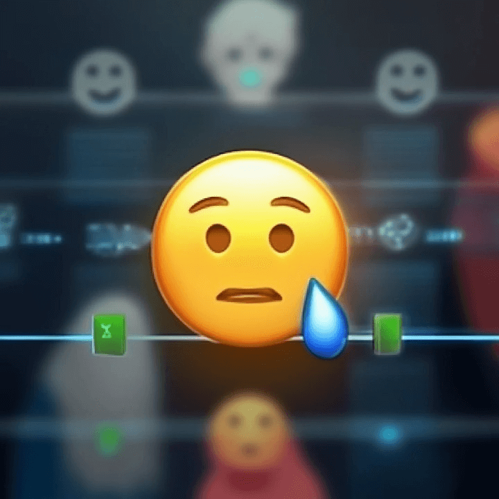

How to Use Emojis Intelligently in Social Media Posts
A Practical Guide to Boosting Engagement on Instagram, Twitter, and TikTok
Emojis have evolved far beyond their humble beginnings as simple smiley faces. Today, they’re a universal language — one that transcends words, cultures, and even algorithms. Whether you’re an influencer, a small business, or a digital marketer, using emojis intelligently can transform your social media presence from average to outstanding.
But there’s a fine line between engaging and overdoing it. This guide will show you how to use emojis effectively on Instagram, Twitter (X), and TikTok to grab attention, convey emotion, and increase engagement.
Why Emojis Matter in Social Media
Studies show that posts containing emojis can increase engagement rates by 30–50%. Emojis add color, emotion, and humanity to text — all elements that social media thrives on. They make your captions more relatable and can even boost visibility through better algorithmic performance.
In short, emojis humanize digital communication. They help your audience connect emotionally, remember your message better, and associate your brand with authenticity.
The Psychology Behind Emojis
Emojis work because they trigger the same parts of the brain that respond to human facial expressions. A simple 😊 can subconsciously activate empathy, making readers more receptive to your message.
Additionally, emojis help break visual monotony. Social media feeds are crowded with text, ads, and videos — a well-placed emoji gives the eye something different to focus on, guiding attention where you want it.
However, context matters. The same emoji can carry different meanings depending on culture, age group, or even platform. For example:
- The 🙠emoji often means “thank you†in Western cultures but “please†or “praying†in others.
- The 💀 emoji, once symbolizing death, is now used humorously to mean “I’m dying of laughter†among Gen Z users.
Understanding these nuances separates smart emoji use from careless decoration.

Instagram: A Playground for Visual Expression
The Unicode Consortium became the international authority responsible for encoding the characters and ensuring the consistent display of emojis across all devices. Through unified character standards, users on different devices could now reliably see the intended emoji, regardless of the slightly differing aesthetic styles of each platform.
Instagram thrives on aesthetics — and emojis fit perfectly into that ecosystem.
How to use them effectively:
-
Highlight your CTAs (Calls to Action):
Use arrows 👉 or sparkles ✨ to draw attention to “Link in bio†or “Swipe up†prompts.
-
Add personality to captions:
Instead of saying “New product available”, try “Our new drop is finally here 😍🔥”.
-
Separate ideas visually:
Use emojis as visual bullet points to make long captions more readable. For example:
- 🌿 Organic ingredients
- 🌸 Cruelty free
- 💧 Hydrating formula
-
Match emojis to your brand tone:
- A luxury brand might use 💠or ✨ sparingly for elegance.
- A playful brand could use 🐣🎉💃 for a lighthearted vibe.
What to avoid:
Too many emojis can feel unprofessional. Keep them consistent with your brand image, and avoid mixing unrelated symbols.

Twitter (X): Emojis as Attention Magnets
On Twitter, every character counts — and emojis can help you say more with less.
Smart ways to use them:
-
Replace words for brevity:
“I love coffee ☕†is shorter and more expressive than “I love coffee.”
-
Enhance emotion in short tweets:
A single 😤 or 😂 adds tone to otherwise flat text.
-
Create recognizable threads or campaigns:
Use a signature emoji to brand your threads — for example, a marketing thread series marked with 📈 or 💡.
-
Stand out in trending topics:
When timelines are fast-paced, emojis help your tweet visually pop.
Bonus tip:
Use emojis strategically near the beginning or end of a tweet — these positions draw more attention than the middle.

TikTok: Visual Language Meets Visual Platform
TikTok is all about fast, emotional storytelling — and emojis fit naturally into that rhythm.
Here’s how to leverage them:
-
Enhance on-screen text:
Add emojis directly to video captions or pop-up text to emphasize reactions (e.g., 😱 for shock moments or 💃 for fun transitions).
-
Boost your hashtags:
Adding a few emojis to your caption or hashtag area can increase discoverability and emotional tone. For example:#MorningRoutine ☀️ #SelfCare 💧 #HealthyLiving 🥑
-
Use emojis in comments and community engagement:
Creators often reply to comments with a mix of text and emojis to sound more authentic and relatable.
-
Match the video mood:
For emotional storytelling, keep emojis subtle (💔😢). For humor or energy, go bold (😂🔥🤩).
Balancing Style and Substance
The goal isn’t to decorate — it’s to communicate. Here’s how to find the sweet spot:
- ✅ Do use emojis to emphasize emotions, structure text, or guide attention.
- 🚫 Don’t use them as a replacement for meaningful words.
- 🯠Do stay consistent with your brand tone.
- 🌀 Don’t copy trends blindly — test what resonates with your audience.
Think of emojis as spices in a meal: a little enhances flavor, but too much ruins the dish.
Final Thoughts
Using emojis intelligently isn’t about flooding your captions with color — it’s about strategic storytelling. Every emoji should serve a purpose: to enhance emotion, improve clarity, or catch the eye. On platforms like Instagram, Twitter, and TikTok, where attention spans are shrinking and competition is fierce, the right emoji at the right moment can make your content unforgettable. So next time you craft a post, don’t just write — express. Because in the language of the internet, a single emoji can speak louder than words. 😉